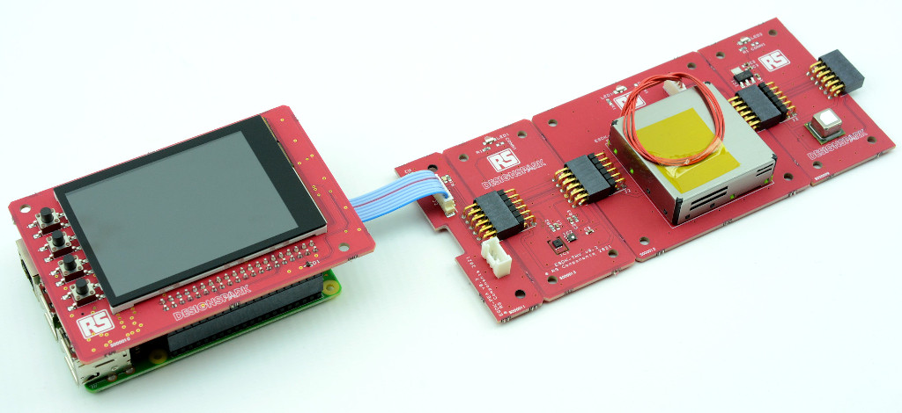

Environmental Sensor Development Kit
The DesignSpark Environmental Sensor Development Kit (ESDK) is an open source hardware platform that is designed to make it as easy as possible to prototype custom sensor solutions. It has been created to support the engineer activism Air Quality project, but could easily be put to use in other sensing projects — and for that matter, potentially a great many more IoT and wider applications that have a need for a small Linux computer with integrated touchscreen and GPS etc.
The ESDK uses a Raspberry Pi SBC for processing and is currently comprised of the following modules:
Main. Main board which connects to the Raspberry Pi and provides a colour LCD screen, RTC, GPS, buttons and buzzer.
PEA. Small PCB at the start of the sensor chain, cabled to the Main board.
THV. Temperature, humidity and volatile organic compounds (VOC) sensor.
CO2. CO2 sensor.
PM2. Particulate matter sensor.
NO2. NO2 sensor.
FLD. Formaldehyde sensor.
NRD. Nuclear radiation detector.
CRE-A & CRE-B. Cabled range extender board set.
EEA. Ecosystem adapter board which transitions to Pmod, Qwiic and Grove systems.
The Main board is connected to the Raspberry Pi P1 header and is cabled to the PEA board, which is at the start of the sensor chain. Each sensor has a connector on either side, allowing them to be connected together in chain.
The CRE boards permit the chain to be extended over longer distances, by converting the I2C interface into differential signals. The A board is located at the end closest to the Main board, while the B board is placed at the remote location, at the start of the extended sensor chain. The board set also provides power, with conversion to allow for a voltage drop over longer cable runs. Regular twisted pair Ethernet cable is used to connect the boards.
The EEA board may also be connected at the end of a sensor chain and transitions from the ESDK connector, to standard Pmod, Qwiic and Grove connectors. Thereby making it easy to connect third party sensors to the ESDK.